The console: a user manual
For LCARS __VERSION__, the web console only. The version beside LCARS at the top of your console says which one you have.
0. Start here: what is the console?
The console is the web app this manual covers: your journal, read and written in a browser, on a phone or at a desk.
The three words to know
- Entry. An entry is one thing written down in the journal, on a day, with a kind. A note, a task, a night's sleep and a trip are all entries.
- Kind. A kind is the entry's type, named in your own words. A new journal starts with one kind,
personal_log, shown as Personal log: every new entry gets it until you choose another. To add another, type a name nobody has used in the kind picker: its last row is new kind. - Day. Every entry belongs to the day it was written. The list is grouped by day, newest first.
For example: at 10:30 on Sunday you write "Dentist moved to Friday". That is one entry, of the kind Personal log, on Sunday. Filter the list to Personal log and it is there; filter to another kind and it is not.
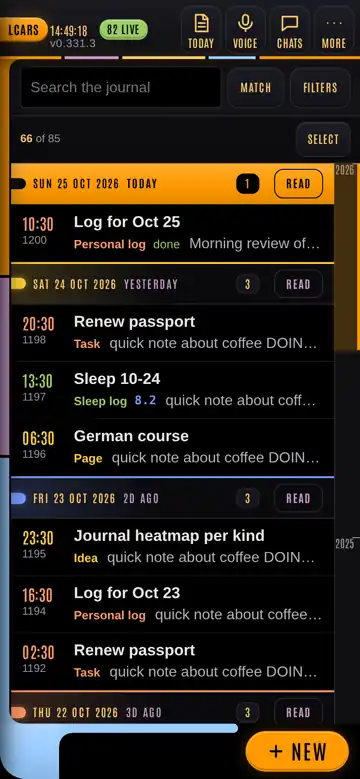
Where things are
- The header, along the top: LCARS (a tap clears every filter and goes back to the top), the clock, the version, and buttons. On a phone it carries up to four buttons and More (⋯) for the rest. More → Header buttons chooses which four.
- The list, under the search box: every entry, grouped by day. A tap on a row opens it.
- New, at the bottom right on a phone: a tap starts a new entry. Hold it for more ways to start one.
- Filters: the Filters button beside the search box opens them as a drawer on a phone. On a desk they are the column on the left.
On a desk the three parts sit side by side: filters, the list, and the open entry.
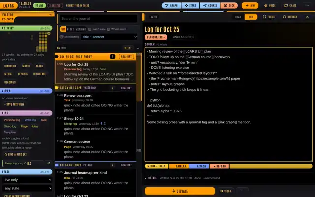
A button, a key or your voice
Most things in the console can be done any of these ways:
- A button or a tap, as described in each section.
- A key, at a desk. Press ? for the keyboard help: every key, searchable; Enter runs the one you pick.
- Your voice. Press Voice (or m) and say "computer, …" with an order. Say "computer, help" for every phrase.
When you cannot find something, press p (or say "computer, command palette"). The command palette lists every filter and action by name. Type a few letters and press Enter.
This manual is in the console too: The manual at the foot of the help opens it in a tab of its own, and so does "computer, open the manual". On your server it is also at /manual: the server's address with /manual after it.
What is not here
- The deck is the 3D ship, walked in the browser. Deck in the header (or D) opens it. It has its own controls, and this manual does not cover it.
- Setting up the server is in the project's README on GitHub: github.com/saftacatalinmihai/lcars.
- A feature that is off. Some features need something on the server, such as a key or a program. When one is off, its door says so. Press W for the list (see When something goes wrong).
Finding this manual again
This manual is a report in your journal. Open Reports (in the filters, or say "computer, reports"), and pick "The console: a user manual". In the reader, Open as a page shows it in a tab of its own.
Related
1. Write an entry
To write something down, tap New (or press n), type, and leave: the console saves as you go.
Write a new entry
- Tap New. On a phone it is at the bottom right; at a desk, in the header.
- Type a title in the top field, if you want one. An entry needs no title.
- Tap the kind chip under the title (it says Personal log at first) to choose the kind. Type part of a name to narrow the list. A name nobody has used is the last row, new kind.
- Write in content.
The entry saves 3 seconds after you stop typing, once it has words. The chip beside content says where it stands: ● Editing, Saving…, ✓ Saved, or ✕ Not saved · Retry. Tap the chip, or press Ctrl+S (⌘S on a Mac), to save at once. Leaving the entry by any door (Back, Close, another row) saves it first.
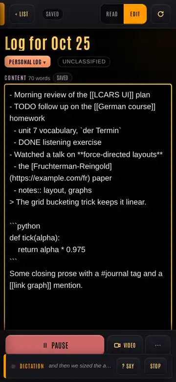
Other ways to start one
Hold New on a phone for its menu: Dictate, Video dictation, Photo, Video, Voice memo, Task, File and From template.
- Quick capture (press q, or say "computer, capture"): one line straight into the journal, no editor and no title. Pick the kind under it and press Capture. Type
/log weight 72.4to record a number instead. - From a template (press N): an entry that starts from one of your saved shapes. A template is an entry of the template kind (
templateunless you changed it in Config). - A task (Task in New's menu, or "computer, new task"): an entry that starts as a
TODOline. See Tasks and the calendar.
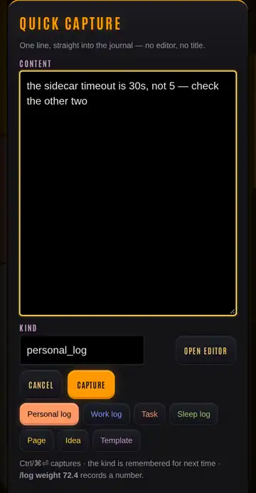
Write by voice
Tap Dictate at the bottom of an open entry. What you say is typed where the cursor is. Video does the same and films you; the video is attached to the entry. Say "computer, …" in the middle of dictation to give an order instead of words. See Voice orders.
Tidy dictation, in the entry's ⋯ sheet, has the computer fix misheard words, spelling and punctuation. It shows the changes as a diff, and nothing changes until you accept it.
Link, tag and shape
In content:
- Type
[[to link to another page. Suggestions appear; pick one with the arrows and Enter. - Type
#to tag. Existing tags are suggested. - Type
/for the date, the time, or a shape such as a task line. - Write
((123))to link to entry number 123.
Lines that start with TODO, DOING, NOW, LATER or WAITING are tasks; DONE or CANCELED closes one.
Change when it happened
Open Details, under the content. Written is when the entry happened; tap it to change the day or the time. Scheduled gives it a start and an end, which puts it on the calendar. Done marks it open or done. Value holds a number, such as a weight.
To add something you remember later, open the entry before it and press o (or say "computer, new entry after this one"). The new entry is stamped halfway between the two.
Keep writing in a new entry
In the entry's ⋯ sheet:
- Continue (w) starts a new entry linked back to this one, so the two read as a thread.
- Duplicate (y) starts a new entry with a copy of this one.
- Revert throws away your changes and goes back to what the server holds.
Delete an entry
- Open the entry, then its ⋯ sheet.
- Tap Delete. The console asks "Delete this entry?".
- Tap Delete again to confirm, or Keep it.
A deleted entry leaves the list, but it is not destroyed. The message at the bottom of the screen offers Undo for 8 seconds. After that, set State in the filters to deleted only, open the entry, and tap Restore.
Related
2. Find and look back
To find an entry, type in Search the journal at the top of the list; to narrow the list, open Filters.
Search
Type words in Search the journal. The list shows the entries holding every word, anywhere. Put "a phrase" in quotes to search it whole.
Tap Match for more:
- Text, Regex or Meaning. Meaning finds entries close in meaning to what you typed, closest first, even when the words differ. A
~in front of a search does the same. Meaning needs the server's embeddings; without them, W says so. - Match case, Whole words, and Not matching (the entries without the words).
- Where to look: title + content, content only, title only, or every field.
Filter the list
Tap Filters (on a phone it opens as a drawer; tap Done to close it). At a desk the filters are the left column.
- Kind: a tap on a kind's chip turns it on or off, and the list shows the kinds that are on. Ctrl-click (⌘-click on a Mac) keeps only that one. Find a kind (K) searches every kind by name. All kinds (C) clears the kind filter.
- State: live only, live + deleted or deleted only; and any state, open only or done only.
- Written: a since and until day, or 7d, 30d, month, clear, and on this day (this date in other years).
- Sort: newest first by default; also by when it was last changed, by number, by length, or by kind.
- crew entries hidden: the entries the crew and Number One write stay out of the list until you tap it (it then says crew entries shown), or press H.
Filters shows a count of how many are on. Press c (or say "computer, clear filters") to turn them all off; the message at the bottom offers them back.
Save a filter you use often
Set the search, the filters and the sort, then tap + Save this view under Views (or press V) and give it a name. The view's chip brings it all back with one tap. Views are kept in this browser, so each device has its own.
Go to a day or a month
- Each day in the list has a bar with its count. Read on the bar shows the whole day as one block.
- Drag the strip of years beside the list to scrub through the months.
- Today, in the header, shows today's entries by time.
- [ and ] move a day; { and } a month.
- Month (M) opens the calendar. See Tasks and the calendar.
What is new since I looked?
Press u, or say "computer, what did I miss". The list shows only what arrived since your last visit.
Look back
These are in the filters, under the activity chart:
- Statistics: the journal as numbers.
- Readings (E): every measured series, such as a weight, by day, week or month.
- Resurface (R): an old entry, at random.
Graph and Stars are in the header at a desk, and under More on a phone:
- Graph (v): every
[[page]]the journal links, as a map. - Stars (S): the whole journal as a starfield, placed by meaning. It needs the embeddings, as Meaning does.
Two more, by key, voice or the palette:
- Trend (T, "computer, trend a topic"): how often a name turns up, month by month.
- Ambient mode (z, "computer, ambient"): the clock, the numbers and a memory, alone on screen.
Pin an entry to the top
Pin, in an open entry's ⋯ sheet, keeps it at the top of the list, on every device. Eight can be pinned at a time.
Related
3. Read and share
A tap on a row opens the entry to read; Edit at the top turns it into the editor, and Read turns it back.
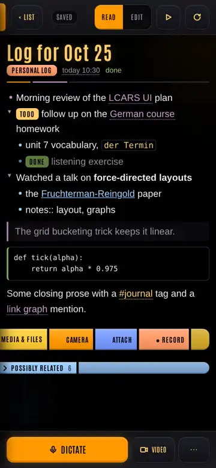
Read an entry
- The reader draws the text: lists, links, quotes, code, and task marks such as TODO and DONE.
- A tap on a
[[link]]searches the journal for that page. - Possibly related, under the entry, lists entries that share its links or its rarer words.
- ‹ List (on a phone) or Esc goes back.
- j and k open the next and the previous entry.
Hear it read aloud
Tap the read-aloud button in the reader's top bar, or press a. Press it again, or say "computer, stop reading", to stop. "Pause reading" and "go on reading" hold it and carry on.
Read several at once
At a desk, Shift-click a [[link]] to pin that entry beside this one. Pinned entries form a stack: 3 flips to the next, # unpins them all.
Focus (f) shows the open entry alone on the screen.
Read a whole day or a thread
- Read on a day's bar, or d, shows the whole day as one block.
- An entry written with Continue is part of a thread. Say "computer, read the thread" for every entry of it, oldest first.
Share an entry
- Open the entry, then its ⋯ sheet, and tap Share (or press F).
- In the Share sheet, tap a chip for each network you want: Hacker News, Reddit, X, Bluesky, Mastodon, LinkedIn or Threads. Each gets a card with its own text and a counter of its length, as that network counts it.
- On a Mastodon or Bluesky card, tap Post: the console posts it for you (see Post to Mastodon and Bluesky). On any card, tap Open: the network's own page opens in a new tab, with the text filled in. What it cannot be handed, such as a first comment, is copied for you to paste.
- After Open, post it there, with the network's own button.
The console posts only when you tap Post, and only to Mastodon and Bluesky, once the server holds their keys. Every other network, it only fills the text in.
Back in the sheet, paste the post's link on its card and tap Save link. It becomes a share entry, which counts the post's numbers (see Shares and the social side). To post later, tap Schedule… on a card and set a day and a time: the console makes a reminder with an alert.
Related
4. Several entries at once
To change many entries together, tap Select above the list (or press x), pick them, then choose an action.
Pick entries
- Tap Select. Each row gets a box, and the bar shows the count on top: "nothing picked", then "3 picked".
- Tap the rows you want. All picks every row the list shows; once all are picked it reads None, which unpicks them (or say "computer, pick none"). At a desk, Shift-click picks everything from the last pick to here, and Ctrl-click (⌘-click) picks a row without leaving the list.
- Done, beside the count, leaves select mode.
The actions are Kind, Schedule, Join and Delete. On a phone they sit at the bottom of the screen, where New was, with Delete set apart in red. At a desk they are one row in the bar, Delete apart before Done.
Up to 200 entries can be changed or deleted at once. Narrow the list first with a search or a filter.
While a change is written
One change runs at a time. A line under the count says what is being written, and the actions wait until it ends. The message at the bottom names the entries by their titles and offers Undo.
If a change fails on some entries, the line says so, and the picks become just the entries that did not change. Tap the same action again to retry. Offline, the line says the changes are sent when the link is back.
Change their kind
Tap Kind and choose a kind. Every picked entry gets it. Undo, in the message, puts each one's old kind back.
Schedule them
Tap Schedule to give every picked entry one day and span, or to clear their schedule. Undo is offered the same way.
Join them into one
Join (J) puts the text of every picked entry into the oldest of them.
- Pick two or more entries, and tap Join.
- The console asks "Join N entries?" and shows which entry is kept and which are folded in. The kept entry keeps its kind, its title and when it was written; each folded-in text goes in under its own time.
- Tap Join, or Keep them apart. The newer entries are deleted when they are joined.
They are not destroyed: Undo, in the message after the join, restores the others and puts the kept entry's text back. An edit made to the kept entry since the join is kept. After the message is gone, set State to deleted only, pick them, and tap Restore.
If some of the newer entries could not be deleted, the line says "Joined; 2 still here. Delete them to finish", with those entries picked: tap Delete to finish the join.
Delete them
Tap Delete. The console asks "Delete N entries?"; tap Delete N to confirm, or Keep them. Every picked entry leaves the journal. They are not destroyed: Undo in the message brings them back. Later, pick them with State set to deleted only: the bar's Delete then reads Restore.
Related
5. Tasks and the calendar
A task is a line in any entry that starts with TODO or another task word (below); the task board (Tasks, or t) lists every open one in the journal, oldest first.
Write a task
Start a line with one of these words:
| Word | Means |
|---|---|
TODO, LATER | to do |
DOING, NOW | under way |
WAITING | waiting on someone |
DONE | finished |
CANCELED | dropped |
For example, - TODO call the garage in today's log is a task. Task in New's menu (or "computer, new task") starts an entry with a TODO line ready.
See and tick your tasks
- Tap Tasks in the filters, or press t.
- The board lists each open task line, with the entry it is in. Filters at the top chooses Open, Done or All, which kinds, and which dates. On a phone they fold to one line; tap it to open them.
- Tap the circle beside a task to tick it DONE. The message at the bottom offers Undo.
- Tap the task's text to open its entry.
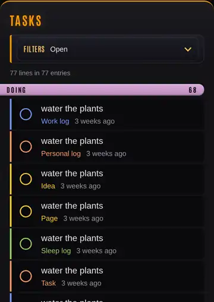
Give a task a due date and a reminder
Entries of the task kind (task unless you changed it in Config) are also reminders. They can be read by a phone's or a computer's reminders app over CalDAV, if your server is set up for it.
- Open the task's entry. Tap reminders, beside when it was written.
- Set the due date, the alerts and the repeat. Every other CalDAV field is there too.
Or say it: "computer, due friday at 5 pm", "computer, remind me when it is due".
Open the calendar
Tap Month in the filters, or press M. Choose the scale at the top: Year, Month, Week or Day (keys y, m, w, d). The arrows (or ← and →) move a period.
- A tap on a day shows its entries under the calendar. Day opens that day hour by hour; In the list filters the list to it.
- Today, This week, This month or This year, by the scale, comes back to now.
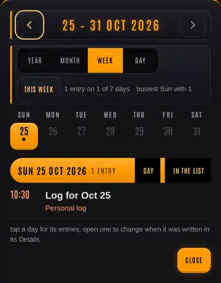
Move an entry to another day or hour
At a desk, drag an entry in the calendar onto another day or hour. That changes when it was written, as editing Written in its Details would.
In the day view, drag across empty hours to make a new entry at that time. Drag a block's top or bottom edge to change when it starts or ends.
On a phone, open the entry and change Written in its Details.
Plan an hour
Say "computer, plan an hour", or tap a free hour in the day view. Today's next free hour is scheduled with a name you type in place. The message offers Undo.
Time something
Open the entry and say "computer, start the timer" (or open "the stopwatch"). It counts up from now; "stop the timer" ends it. The start and end are kept in the entry's Scheduled.
Related
6. Trips and the map
To plan a trip, open Course and add places. The console times every leg and shows the weather along it.
A course is kept in an entry of the trip kind (trip unless you changed it in Config), so it is in the journal like any other entry.
Plot a course
- Tap Course in the header (under More on a phone), or press O.
- Type a place in add a place and pick it. Add the next stop the same way. Each stop gets a number on the map, and the weather for when you reach it.
- The bar at the bottom shows the distance, the time, the number of stops and when you arrive.
- Itinerary lists the stops, their times and their weather. Entry opens the entry the course is kept in.
Courses can be driven, walked, hiked or biked. To see one part alone, with its own distance, time and climb, say "computer, focus the hike" (or the drive, leg 3, the last part). "Whole trip" shows all of it again.
Talk it over with the navigator
Navigator opens a conversation about the course. The navigator can change the course for you, and its answers are spoken. It needs Claude on the server; without it, W says so.
Plan by voice
Each of these is a spoken order:
- "Best time to leave": the departures that meet the least rain, wind and dark.
- "Places fuel" (or food, water, toilets, camping, …): places on the map. "Places along the course" keeps to the ones near the route.
- "Map layers": trails, cycling routes, rain and weather on the map. (☰ at the top right.)
- "Keep the course offline": the map along the course, kept on this device for when there is no signal.
- "Picture of the course": the course on a map, at the top of its entry.
On the way
- ◎ shows where this device is and which way it faces. "North up" and "heading up" choose how the map turns.
- "Record the track" follows where you go and keeps it with the course as a GPX file. "Stop the track" ends it and keeps it.
Afterwards
- "Show the trip journal": what you wrote during the trip, on the map.
- "Show the map of the day": a pin for each place written that day, and the day's recorded tracks.
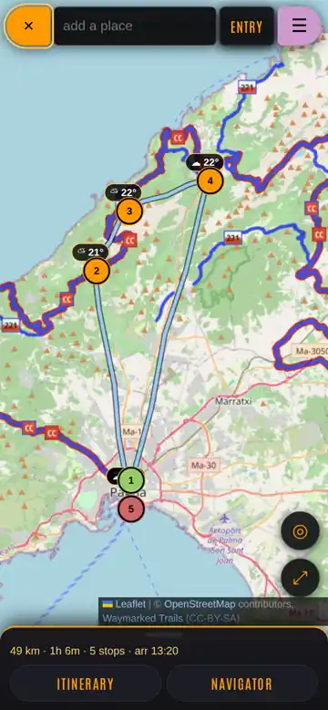
Related
7. Pictures, recordings and reports
To add a photo, a recording or a file to an entry, use the Media & files bar under its text: Camera, Attach or Record.
Files need a media store on the server. Without one, W lists what is missing.
Add a picture, a video or a file
Open the entry, then tap one of the three in Media & files:
- Camera takes a photo or a video.
- Attach adds any file: photos, video, audio, PDFs, documents.
- Record records audio. It turns into ■ Stop with the time; tap it to stop and attach the recording.
The file appears in the bar. A tap on it opens it.
On a phone, hold New and choose Photo, Video, Voice memo or File to start a new entry with one.
Play a recording
Rows holding a recording or a video have a play button of their own. In an open entry, press l (or say "computer, play the tape") to play or pause it.
See every file at once
Media in the filters (or i) shows every photo, video, recording and file in the journal, with the same filters as the task board.
Read a report
A report is a page the crew or Number One published for you to read: an HTML page, a PDF, a chart or a table. Each one is an entry of the kind report, so it is in the journal too.
- Tap Reports in the filters, or say "computer, reports".
- Tap a report. It opens in the reader, with its pictures.
- Open as a page, at the top of the reader, shows the report's own file in a tab of its own.
A report runs in a closed box: it cannot read your journal or anything else the console keeps in the browser.
Related
8. Chats with the computer
To ask a question about your journal, tap Chats (or press A), then +, and type it in ask about the journal.
The computer is the chat that answers questions about your journal. It is Claude, run on your server, and it reads the journal to answer. It needs Claude on the server; without it, W says so.
Ask a question
- Tap Chats, then + for a new chat, or tap an old one in the list.
- Type in the box at the bottom, and send.
- The answer is written as it comes. An entry it names, such as
#123, is a link: a tap opens it.
Or say "computer, ask what did I write about the garage", and the answer is spoken.
The Chats list
The list is in sections. Each shows only when it has something in it:
- Open questions: what Number One and the crew ask of you (see The crew).
- Computer: your chats with the computer.
- Crew: the queue, the rooms, Number One and each engineer, if your server runs the crew.
- Aboard: the people you talked to on the deck, and the deck's architect.
- Reports: each crew role's latest report, and your chat about it. A new one is marked NEW. Crew notes is here too.
- Courses: the navigator of each course.
- Archived: chats you put away.
search the chats, at the top, finds a chat by its words.
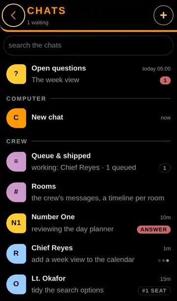
In a chat
- ⋯ at the top: New chat, Read it out (the last answer, aloud), and Archive.
- The model chip chooses which Claude answers the next message: Sonnet, Haiku, Opus or Fable.
- + beside the box adds files to your message. You can also paste one into the box, or drop it on the thread.
- To quote part of an answer, select it and press >. On a phone, swipe a paragraph to the right.
- A swipe on a chat in the list marks it read or unread; Archive puts it away. It comes back with Bring back.
Talk instead of typing
Tap Voice at the top of a chat. Replies are then spoken as they come, and two ways to talk appear under the box:
- Hold to talk: hold it (or Space, at a desk) and speak; let go and it is sent.
- A conversation: say "computer, start conversation". The microphone stays open; each thing you say is sent when you stop, and the reply is spoken. "End conversation" stops it.
Config sets what the voice says (everything, or only the answers) and when it turns itself off (after five minutes by default).
The chat dock, at a desk
At a desk, chats can also open as small windows at the lower right, so you can keep writing while one answers. Press B to go into the dock and B again to come back. In a window, Esc minimises it and f opens the full view.
Related
9. The crew
The crew are Claude engineers who work on the app itself, under Number One, run from the console. You talk to them in the console's chats, in rooms, and in crew notes written in your entries.
The crew need setting up on the server. Until then, the Crew section of the Chats list shows one row, The crew, which asks for the engineer key.
Who is who
- Number One is your first officer. It gives the engineers their orders and reviews their work, so most of the time you talk to Number One and it does the rest.
- An engineer is one Claude Code session that changes the app, on a branch of its own. Each has a name and a conversation.
- The seat: one engineer works at a time. A message to an engineer who is not in the seat waits, marked queued · for the seat, and is delivered when their turn comes.
- Crew roles, such as the yeoman, run on a schedule and write reports. Their reports are in the Reports section of the Chats list, where you can talk each one over.
What the crew write in the journal is hidden from your list until you show it (H).
Give an order
- To Number One: open Number One in the Chats list and write. This is the usual way.
- To an engineer: open their conversation and write.
- A new engineer: type a name in add an engineer, at the bottom of the Chats list, and tap Add engineer. Dismiss, on their row, stops them and takes them off the list, with everything kept; Bring back returns them.
A badge on each row says where they stand. Three dots: they are working. #1 SEAT, #2 SEAT: their place in line for the seat. ANSWER: a question of theirs waits for you.
Rooms
Rooms, in the Crew section, shows the crew's messages as one timeline per room. A project room holds one piece of work: your order, Number One's orders to the engineers, their reports, and the deploys.
- + makes a new room.
- What you write in a room goes to Number One. The To chip beside Send picks an engineer instead.
- Each message links to its place in the full conversation.
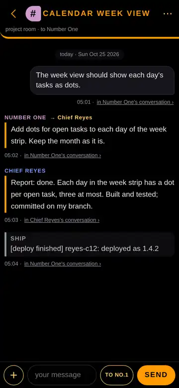
Answer what the crew ask
Open questions (at the top of the Chats list, or !) holds what Number One and the crew ask of you. Each question has its context, its choices and the recommended one.
- Tap a choice for each question, or Skip. Add a note (optional) if you want.
- Tap Send, once every question has an answer. Your answers are written at the top of the question's entry and it is closed; Number One is told.
- Undo, in the message, opens it again.
Later puts a question away on this device for an hour, three hours, or until tomorrow at 9:00.
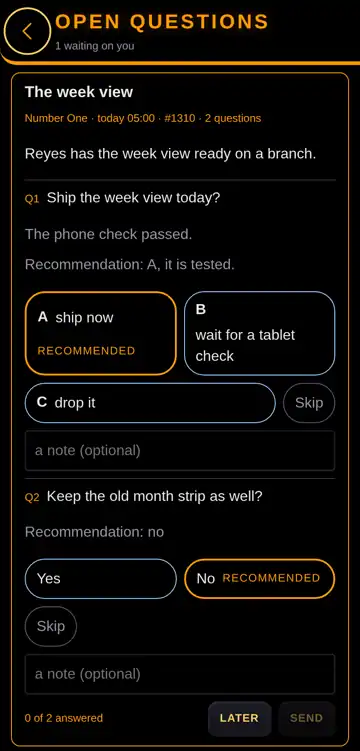
Write a crew note in an entry
In any entry of yours, start a line with @no1, an engineer's name, or a crew role that takes notes, such as @yeoman, then the order:
@yeoman log a gym session from 18:00 to 19:00
The one you named answers beside that line, and you can reply there. Crew notes, in the Reports section of the Chats list, has every thread. A role changes your entries only when the note asks it to; "computer, undo the crew's changes" takes its newest changes back.
See who works on what
Queue & shipped (or Q) shows who has the seat and on what, who waits for it with which order, and every deploy, newest first, with its version.
Deploy an engineer's work
Deploying puts an engineer's work into the app you are using.
- Open the engineer's conversation, then ⋯, and tap Deploy. Usually Number One deploys the work once it has reviewed it; this is for when you want to do it yourself.
- The console asks "Deploy Chief Reyes's work?" (with the engineer's name) and names the branch, its commits and the last one. The work is tested and put into the live app, and the server rebuilt if needed.
- Tap Deploy. The deploy changes the running app, for every device, as soon as it finishes. The conversation shows its progress and how it ended.
If something is wrong afterwards, Roll back, in the same ⋯ sheet, reverts the last deploy. It asks "Roll back the last deploy?" first.
Related
10. Shares and the social side
The console can post to Mastodon and Bluesky when you tap Post, count how a post is doing where you shared it, and tell you of new comments on your accounts.
Counting and the comments are the work of crew roles that read the networks on a schedule, so they need the crew set up on the server.
Post to Mastodon and Bluesky
Once the server holds a key for Mastodon or Bluesky, their cards in the Share sheet have Post and Dry run. Until then Post is greyed, and its note names what the server lacks; Open still works.
- Open the entry's Share sheet (see Read and share) and check Mastodon, Bluesky or both.
- Tap Post on a card, or say "computer, post it" for every checked card at once, or "computer, post to bluesky" for one.
- The card says "posting…" at once, and the button stays busy until the answer. Then it says "posted to Mastodon", with the post's link on the card, and Post goes away.
Dry run (or "computer, dry run") builds the post and sends nothing: the card says so, and the attempt is kept in the journal. While the server is set to dry runs, the card says "Dry runs only" and Post is a dry run too.
If a post fails, the card says why, in red, and Post becomes Retry. The same text is never posted twice to one network, and each network takes at most five posts a day; a card says so when it stops one.
Count a shared post
- Share the post where you want, by hand or with the Share sheet (see Read and share).
- Say "computer, add a share", or tap + Share in Blog shares. A new entry of the share kind (
shareunless you changed it in Config) opens. - Paste the link of the place you shared it, and leave the entry.
The shares role reads each link's numbers every six hours. Blog shares shows them: the post's total over time, and a card for each place, with its latest count and a chart. On a card, Open goes to the place and Entry opens its share entry.
To open Blog shares, find it in Statistics, or say "computer, blog shares".
See new comments on your posts
The social watch reads your accounts for new comments and replies. Each new one is written into the journal with a reply drafted for you, and a reminder appears in Open questions.
- Say "computer, show the social comments", or open Open questions and find the social watch's card.
- Each comment has Open, to go to it on its network, and Copy reply, to copy the drafted reply.
- Paste the reply on the network yourself, edited as you like.
"Computer, dismiss the social reminder" ticks the reminder off; the comments stay in the journal.
Related
11. Classified entries
A Secret entry is encrypted in your browser before it is sent, with a key only your password opens. The server keeps the encrypted text and never sees the password.
Who can read a Secret entry
Only you, on a device where you have unlocked it. Everyone else sees an entry marked ▮ Classified, with its kind and its dates but not its title or text. That includes the computer's chat, the crew, Number One, and anyone holding a copy of the journal.
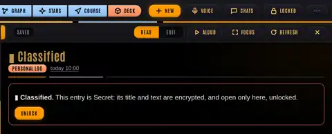
What stays visible: the kind, when it was written, its schedule and whether it is done. What is sealed: the title, the text and any value it holds, such as a weight.
Limits:
- An entry with files cannot be made Secret: files are not encrypted. Remove them first.
- A Secret entry is not read aloud.
- Dictating into one sends your voice to the recogniser, off the device. The dictation bar says so: "▮ Secret entry — the voice leaves the device".
Set the password, the first time
- Open Config (under More), and find Classified — Secret entries. Tap Set a password…. (Marking an entry Secret before there is a password opens the same dialog.)
- Type the password (at least 8 characters) in the new password and the same again.
- Leave Make a recovery code too ticked. If you lose this password, your Secret entries are gone. Nobody can recover them: not the server, not its admin, not an engineer. The recovery code is the one way back.
- Tick I understand: a lost password means my Secret entries are gone, and tap Set the password.
- Your recovery code appears. It is shown this once. Keep it in a password manager or on paper, away from this device. It opens your Secret entries if the password is lost, for anyone who holds it. Tap Copy if you want it on the clipboard, then I have kept it.
The page is now unlocked on this device.
Make an entry Secret
- Open the entry. Under its title, the chip says Unclassified.
- Tap the chip (or say "computer, mark this secret"). If the page is locked, it asks for the password first.
- The chip says ▮ Secret · sealing…, then ▮ Secret. If sealing fails, it says ✕ Not sealed · Retry; tap it to try again.
Unlock and lock
Once a password is set, Locked appears in the header (under More on a phone, as Unlock classified, unless you chose it in Header buttons), or press L. Tap it, type the password, and tap Unlock. With a passkey registered, Use a passkey unlocks with Face ID, a fingerprint or a security key instead.
The page locks itself after 15 minutes idle, 5 minutes away, or a reload. To lock it at once, tap Unlocked in the header, or say "computer, lock". Locking drops the key and the decrypted text from the page.
Add a passkey
In Config → Classified, while unlocked, tap Register this device…. It asks for the password once more, then your device makes the passkey. Remove, beside a passkey, takes it off the list.
Lost the password?
Without the password, the recovery code or a passkey, your Secret entries are gone. Their rows stay, as placeholders with their kind and dates, and can be deleted.
With the recovery code:
- Tap Locked, then Lost the password? Use the recovery code….
- Type the code, then a new password twice.
- Tap Unlock and set it. The code stays valid. If anyone may have seen it, make a new one in Config (Replace it…, or Make one… if you have none); the old code then stops working.
Change the password
In Config → Classified, tap Change the password…: the password now, then the new one twice. No entry is rewritten: the entries keep their key, and only the password that opens it changes.
Declassify an entry
- Open the Secret entry and tap its ▮ Secret chip (or say "computer, declassify").
- If the page is locked, it asks for the password first. Then it asks "Declassify #…?" (with the entry's number). Its title and text go back to the journal in the clear, where the chat, the crew, Number One and every copy of the journal can read them.
- Tap Declassify to go ahead.
Related
12. Offline, updates and settings
The console keeps working without a connection: what you write is kept on this device, in the outbox, and sent when the server is back.
Working offline
When the server cannot be reached, the header says offline, with how many changes are waiting (for example "2 waiting"). Keep writing as usual.
- When the connection is back, the waiting changes are sent by themselves. A tap on offline tries at once.
- If an entry was changed both here and elsewhere, the header says how many there are to resolve. Tap it; for each one, choose Overwrite (send your edit; the other version is lost) or Load theirs (throw your edit away and keep the server's).
- If this device's storage is full, the console says that offline changes will not survive a reload. Reconnect before you close the page.
A course can be kept for offline use too: see Trips and the map.
Update the app
The version is beside LCARS, at the top left. When the server has a newer one, it is marked; a tap shows what is new, with Update.
You can also open Config and, under this app:
- Update to v… loads the newer version and reloads the page.
- Check now asks the server which version it has.
- Reload, here in Config, fetches the app's files again and reloads, even with no update.
- What's new lists the releases newer than this page.
Settings (Config)
Config is under More (⋯) in the header, or say "computer, settings". It is one dialog, titled Connection: Connect, at its foot, saves what you changed and Cancel drops it (the volume and Kinds save as you change them). It holds:
- base url and your login: the server's address and who you are.
- drag a row right and drag a row left: what a sideways drag on a list row does. For example, done / not done, delete / restore, or open in the editor.
- speech recognition, the volume of the console's sounds, what the chat voice says, when the voice turns off, quick answers, and when ambient mode starts on its own.
- Server — what it can do: each feature, on or off, and what an off one needs. W opens the same list.
- Classified — Secret entries: see Classified entries.
- Kinds — what each feature writes: see below.
Choose which kind each feature writes
Each feature finds its kind by role: new entries use the log role's kind, tasks the task role's, courses the trip role's, and so on. A new journal uses the default names (personal_log, task, trip…).
To use your own names, open Config → Kinds, and point a role at a kind. Or say it: "computer, set the kind for the task to todos". "To default" puts a role back.
Change the colours (themes)
The console can wear another palette: LCARS's own is the default, and 41 more are built in, the themes of btop (a terminal system monitor), such as nord, dracula, gruvbox_dark, tokyo-night and solarized_light.
- Tap Theme under More (⋯) in the header, or Theme… in the settings (Connection), or open the commands (p) and choose Theme…, or say "computer, choose a theme". The picker lists every theme, the current one ticked, each marked dark or light. As you move through the list, the console takes each theme at once, so you see it before you choose. Enter (or a tap) keeps it; Esc puts the one you had back.
- Or say it: "computer, theme nord", "computer, theme gruvbox dark". Hyphens and underscores in a name are spaces when you say it. A name that fits several ("computer, theme everforest") opens the picker on them.
- "computer, default theme", or Theme: lcars in the commands, brings LCARS's colours back.
- A theme marked "low contrast" has text that is hard to read on its own background. It is offered anyway.
- The theme is kept in the journal, so every phone and computer wears the one you chose, and an open console follows a change made elsewhere within a second or two.
- A theme of your own: from a terminal,
lcars-cli theme load FILEtakes a btop.themefile or an omarchycolors.toml, and it appears in the picker under its name, marked "from omarchy" or "from a file".lcars-cli theme set nordchooses a built-in,lcars-cli theme resetbrings LCARS back, andlcars-cli themesays which is worn. - On omarchy,
scripts/omarchy/lcars-webapp --localinstalls LCARS on the machine and puts it in the app launcher;lcars-webapp --remote https://HOSTadds a launcher for a server elsewhere, andlcars-webapp --uninstalltakes it away (your journal stays). The password is kept in~/.config/lcars/env, never in the launcher: the browser asks for it once. It also offers to install the theme hook below for you. - On omarchy, the console can follow the desktop: copy
scripts/omarchy/lcars-theme-setinto~/.config/omarchy/hooks/theme-set.d/and make it executable. Each time omarchy changes theme, the console takes the same colours. It needs lcars-cli and the server's address and password, as lcars-cli takes them (the script's first lines say how). - Red and yellow alert keep their own colours under every theme.
Other settings
- Header buttons (under More, on a phone): which four buttons the header carries.
- Sound (s): the console's beeps and chirps, on or off.
- Reset, on the public demo's banner ("Demo · a made-up journal · your edits stay in this browser"): puts the made-up journal back as it was. Your edits in this browser are dropped. Say "computer, reset the demo" to do the same.
Related
13. When something goes wrong
Find what you see, then follow its steps.
The list says "no link"
The console cannot reach the server. It shows "cannot reach" with the server's address and the reason.
- Tap Retry.
- If it fails again, tap Config. Check base url and the login, then tap Connect.
- If they are right, the server itself is down or out of reach of this network. What you wrote while offline is kept on this device and sent when it is back (see Offline, updates and settings).
An entry says "✕ Not saved · Retry"
The save did not reach the server. Your text is still in the editor.
- Tap the chip to try again.
- If the console says the entry was "Changed on the server", it was edited somewhere else too, such as another window. Choose Overwrite to keep yours (the other version is lost) or Load theirs to keep the server's.
A button or a view says a feature is off
Some features need something on the server: a key, a program or a setting. Press W (or say "computer, what is off"). It lists each feature that is off and what it needs. The README on GitHub explains each setting: github.com/saftacatalinmihai/lcars.
The header shows a red or yellow alert
Tap it, or say "computer, why the alert". It says what the alert is about. Red: offline, changes not sent, a failed save, or overdue tasks. Yellow: a save under way, or changes waiting to be sent.
The page looks old, or a new feature is missing
The version beside LCARS is the version of this page. Open Config and, under this app, tap Check now, then Update if one is offered. Config's Reload fetches the app again even when it is up to date.
The microphone does not listen
- Check that the browser may use the microphone for this site.
- Say "computer, status": it says which field is listening, and in what mode.
- While dictation is on, an order needs "computer" in front. With dictation paused, the console answers orders without it.
Classified entries say they need a secure page
Secret entries need the page served over https. Open the console at its https address.
I cannot find how to do something
- Press p for the command palette and type a word: every filter and action is there by name.
- Press ? for the keyboard help and type a word: it finds the key.
- Say "computer, help" for every spoken phrase.
- Say "computer, open the manual" to read this manual beside the console.
Related
Appendix A. Every key
These keys work at a desk with a keyboard; this table is the keyboard help's own list, made from the app at each build. Press ? in the console for the same list, searchable, and run a key from it with Enter.
The keys marked "in the content box" work while you type there; the others work when no field has the cursor. Esc steps back one level.
Browsing
| Key | What it does |
|---|---|
| / | focus the search box |
| j k | next / previous entry |
| g g G | first / last entry |
| [ ] | previous / next day |
| { } | previous / next month — or drag the rail of years beside the list |
| d | read the whole day as one block |
| M | the calendar — a year, a month, a week or a day of the journal |
| y m w d | while it is open: which of the four scales |
| drag | an entry in the calendar, onto another day or hour — that is its new date |
| drag | empty hours in the day view — that is a new entry, at that time |
| drag | a block's top or bottom edge — that end moves and the other stays put |
| T | trend a topic — how often a name turns up, month by month |
| E | explore measurements — every series zoomable, by day, week or month |
| t | the task board — every open TODO in the journal, oldest first |
| l | play or pause the open entry’s recording or video — or the one already playing. Rows holding one have a play button of their own |
| i | the media — every photo, video, recording and file, under the same filters as the task board |
| u | only what arrived since your last visit |
| H | show or hide the entries the crew and Number One write (hidden by default) |
| R | resurface — open something old, at random |
| v | the link graph — every [[page]] the journal joins up |
| S | stellar cartography — the whole journal as a starfield, placed by meaning |
| D | the 3D deck — walk the ship, with entries pinned as PADDs where you left them |
| A | chats — the computer's threads, the crew roles', the navigators', with what is unread |
| > | in a chat: quote the words selected in it, or else the last answer, into your message |
| + · paste · drop | in a chat: files into your message — a tap on +, a paste into the box, or a drop on the thread (a dock window too); × on a chip drops it (say drop the attachments) |
| swipe → | in a chat, on a paragraph or a bullet: that block quoted into your message, under the last with a line of its own for the answer (on a desk, the ❝ in its margin) |
| B | the chat dock (a desk): into its last window, or its list with the search; B again, back to the page. On a window: Esc minimises, Enter types, ← → the next, x closes, f the full view |
| U | Number One's threads: the sheet — each one to show (and send to), a new one. On a chip: a tap shows that thread only, All everything; a long press renames or closes it |
| ! | open questions — what Number One and the crew ask of you, the context of each, answered and closed here |
| Q | the queue — who has the crew's seat and on what, who waits for it, and everything shipped, newest first |
| Space | in a chat with Voice on, held in its empty box: hold to talk — let go and it is sent. Esc ends a conversation or stops the voice |
| O | plot a course — a trip on a map, every leg timed, the weather along it, a navigator |
| z | ambient mode — the clock, the numbers and a memory, alone on screen |
| ← → | walk days — or the calendar's own period — while one is open |
| ⇧ click | on a [[link]]: pin that entry to the stack, beside this one |
| Alt click | on a [[link]]: trend it instead of searching for it |
Filters
| Key | What it does |
|---|---|
| K | the kind picker — every kind, by name, without the side pane |
| C | back to all kinds — clears the kind filter, and only that |
| p | the command palette — every filter and action, by name |
| c | clear every filter (the message at the bottom offers it back) |
| V | save the search, the filters and the sort as a named view |
| ↑ ↓ | move the cursor, in either picker |
| ⏎ | toggle the kind under the cursor — or run the command |
| Tab | toggle every kind the typed word matched |
| ⇧ Tab | pin only the kinds it matched |
| ⌫ | on an empty query box, back to all kinds |
Layout
| Key | What it does |
|---|---|
| 1 2 | fold the filters / entries column down to a rail |
| f | focus mode — the open entry, alone on screen |
| 3 | flip to the next pinned panel in the stack |
| # | unpin every panel |
Entries
| Key | What it does |
|---|---|
| n | new entry |
| q | quick capture — one line straight into the journal, no editor; /log weight 72.4 records a number |
| N | new entry from a template |
| P | save as a page — the day's entries, grouped by kind, as links, in a draft |
| e | edit the entry; in the editor with nothing focused, back into the text (Escape lets go of it, a second Escape reads) |
| o | a new entry after the open one — stamped halfway to the next, for something remembered later. The rendered day reader has a ＋ between every two entries for the same |
| y | duplicate the open entry |
| F | share the open entry — each network's own composer, filled in; you press its button |
| w | continue the open entry — write on in a new one, linked back, so the two read as a thread |
| x | pick several entries — again to leave |
| J | join the picked entries into the oldest one |
| Ctrl/⌘ click | pick a row without leaving the list |
| ⇧ click | while picking: everything from the last pick to here |
| a | read the open entry aloud — again to stop |
| r | re-read the open entry from the server |
| Ctrl/⌘ S | save |
| Ctrl/⌘ ⏎ | save |
| [ [ | suggest existing links, in the content box |
| ( ( 123 ) ) | written in any entry, a link straight to entry 123 |
| # | suggest existing tags, in the content box |
| / | the date, the time or a shape such as a task line, in the content box |
| Ctrl/⌘ Alt + click | follow a [[link]] from inside the content box |
| ↑ ↓ Tab / ⏎ | pick a suggestion and insert it |
| Tab | two spaces, inside the content box |
| Esc | step back — dialog, drawer, field, editing (saves first), the stack, then the entry |
| ? | this list — searchable, and a key with ⏎ or a tap runs from it |
| W | what is off on the server — each feature it lacks, and the settings it needs (Config's Server) |
| L | classified entries: unlock them (the password), or lock them again |
Voice
| Key | What it does |
|---|---|
| m | the microphone — orders first; “start dictation” types into the focused field |
| “computer …” | said out loud: an order rather than words |
| “computer help” | every phrase it answers to |
| h | the time, read out — the clock beside LCARS says it too, tapped |
Sound
| Key | What it does |
|---|---|
| s | the console's beeps and chirps, on or off — the volume is in Config |
Related
Appendix B. Every spoken phrase
How voice orders work
Tap Voice in the header (or press m) to open the microphone. Then say "computer," and an order: "computer, new entry", "computer, search for garage". "Computer, help" shows this list in the console; "stand down" closes the microphone.
- Dictation types what you say into the field that has the cursor. While it is on, an order needs "computer" in front, so your words are not taken as orders.
- With dictation paused ("pause dictation"), the console answers orders without "computer".
- A phrase with
{…}takes your words in its place: "search for {…}" is "search for the dentist". - "Run {…}" runs anything in the command palette by its name, for what has no phrase of its own.
A few things cannot be done by voice because the browser allows them only from a tap: choosing a file, the camera, and the share sheet of your phone. The password of classified entries is typed, never said.
The table is the console's own list, made from the app at each build. Many phrases have other wordings too; "computer, help" shows them.
The microphone
| Say “computer, …” | What it does |
|---|---|
| pause dictation | stop typing what I say — and answer orders with no computer in front of them |
| start dictation | type what I say again |
| start video dictation | type what I say, and film it — the video is attached to the entry |
| stand down | close the microphone |
| help | this list, in the console |
| open the manual | the user manual, in a tab of its own |
| choose a theme | the themes, each shown as the cursor reaches it |
| theme {…} | a theme by its name — “theme nord”, “theme gruvbox dark” |
| default theme | the LCARS colours again |
| what time is it | the time, read out |
| status | which field is listening, and in what mode |
Fields
| Say “computer, …” | What it does |
|---|---|
| edit title | dictate into the title |
| edit content | dictate into the body |
| edit kind | the kind picker, as a tap on the kind chip (or say set kind to …) |
| edit search | dictate into the search box |
Text
| Say “computer, …” | What it does |
|---|---|
| delete last word | take back the word in front of the caret |
| delete last {number} words | take back several |
| delete last sentence | back to the last full stop |
| delete last line | back to the last line break |
| clear the field | empty it — the message at the bottom offers it back |
| undo | take back the last thing the microphone did |
| select all | select the whole field |
| go to the end | put the caret at the end |
| go to the start | put the caret at the start |
| link to {…} | type [[the page]] |
| timestamp | type the clock, as /log does |
| insert my location | type where you are, as /location does |
The open entry
| Say “computer, …” | What it does |
|---|---|
| new entry | a blank entry, ready to dictate into |
| save | save |
| revert | back to what the server holds |
| read | the rendered view |
| read aloud | say the open entry out loud; in a chat, its last answer |
| stop reading | stop saying it |
| pause reading | hold the entry being read aloud where it is |
| go on reading | the paused entry read on, from the sentence it was in |
| edit | the form, or back into its text (as e) |
| set title to {…} | write the title outright |
| set kind to {…} | write the kind, matched against the kinds in the journal |
| mark it done | the entry marked done |
| mark it open | the entry marked open |
| new entry after this one | a new entry stamped halfway between this one and the next |
| duplicate | a new entry, pre-filled from this one |
| from a template | start an entry from one of the saved shapes |
| capture | one line straight into the journal, without the editor |
| show details | open or shut the entry's Details: when written, scheduled, done, its number |
| tidy the dictation | the open entry's misheard words, spelling and punctuation fixed by the computer, shown as a diff to accept |
| share this | the Share sheet: each network's composer filled in from the open entry, its text and counter per network |
| share on {…} | in the Share sheet: that network's card in (hacker news, reddit, x, bluesky, mastodon, linkedin, threads) |
| do not share on {…} | in the Share sheet: that network's card out |
| schedule the share on {…} | in the Share sheet: that card's reminder, a day and a time (a task with an alert) |
| post to {…} | in the Share sheet: Post on that network's card (bluesky, mastodon) |
| post it | in the Share sheet: Post on each checked network the ship can post to (Bluesky, Mastodon), as its button |
| dry run | in the Share sheet: build each checked network's post and send nothing |
| entry options | the open entry's other buttons, as a sheet (the phone's ⋯) |
| delete entry | delete, or restore a deleted one |
| close | close the editor, back where it was opened from: the day, the tasks, the search or the list |
| focus mode | the open entry, alone on screen |
| new entry called {…} | a blank entry with that title, dictating into the body |
| new task | a new entry that starts as a TODO line |
| capture {…} | one line straight into the journal, as quick capture would file it |
| log {…} | a number, as /log weight 72.4 — “log weight 72.4 kg”; words with no number are captured as a line instead |
| log the nap {…} | an entry of the child's sleep kind for today: “log the nap from 13:35 to 14:39” (or the child's name, set in Config → Kinds), with Undo in the message at the bottom |
| log a {…} | one of something, counted: “log a diaper”, “log a feed” — a counter entry titled with the thing, Undo in the message at the bottom; more than three words is a captured line, as log |
| count {…} | the same: “count a diaper”, “count a fall” |
| count something | the palette's count …: which thing, from the ones counted before |
| log the suggested nap | the nap the editor's suggestions offer, as a tap on it |
| set value to {…} | the entry's number (Value, in Details) |
| take the suggestions | the kind and title the editor suggests |
| take the suggested kind | only the kind |
| take the suggested title | only the title |
| dismiss the suggestions | not for this entry |
| continue this entry | a new entry continuing this one, so the two read as a thread |
| continue the thread | continue the newest entry of this one’s thread |
| read the thread | every entry of the thread, oldest first |
| re-read from the server | fetch the open entry again |
| pin it to the stack | keep it beside the next one opened |
When it was written
| Say “computer, …” | What it does |
|---|---|
| move the time {number} minutes earlier | when it was written, that much earlier |
| move the time {number} minutes later | when it was written, that much later |
| set the hour to {number} | that hour of the same day, the minutes kept |
| back to the original time | the fine slider back to its middle |
The stopwatch
| Say “computer, …” | What it does |
|---|---|
| start the timer | the open entry starts counting up from now |
| start the timer from when it was written | counting from when the entry was written |
| start the timer {number} minutes ago | started a while back |
| start the timer {number} hours ago | further back still |
| stop the timer | the timer stopped now |
| resume the timer | keep counting from where it stopped |
| clear the timer | the start and the end both cleared — the message at the bottom offers them back |
| the stopwatch | the stopwatch panel for the open entry |
Reminders (a task's CalDAV fields)
| Say “computer, …” | What it does |
|---|---|
| reminders | the open task's due date, alerts, repeat and every CalDAV field |
| due {…} | a day and a time — “due tomorrow at 9 30”, “due friday at 5 pm” — saved for Reminders at once |
| clear the due date | the task is due whenever |
| remind me when it is due | an alert at the due time (09:00 for an all-day one) |
Recordings
| Say “computer, …” | What it does |
|---|---|
| play the tape | play or pause the open entry’s recording — or the one already playing |
| start recording | the media bar’s Record, into the open entry — or a new one |
The journal
| Say “computer, …” | What it does |
|---|---|
| next entry | down the list |
| previous entry | up the list |
| open entry {number} | by id |
| why the alert | what the red or yellow alert is about, in the message at the bottom — offline, overdue tasks, a save |
| pin this page | the open entry pinned to the top of the list (8 at most), on every device |
| unpin this page | the open entry's pin taken away |
| open {…} | a pinned entry, by its title — “open boiler manual” |
| edit entry {number} | by id, straight into the editor — what clicking an entry in the rendered day does |
| search for {…} | search the journal |
| clear the search | empty the search box |
| clear filters | every filter off |
| search by meaning for {…} | the entries closest in meaning, closest first |
| show only {…} | narrow the list to one kind, matched against the kinds in the journal |
| all kinds | the kind filter off, and only that |
| pick a kind | every kind, by name |
| last seven days | dates: the last 7 days |
| last thirty days | dates: the last 30 days |
| month to date | dates: this month so far |
| on this day | today’s date in other years — again to turn it off |
| clear the dates | no date range |
| view {…} | a saved view, by name |
| save this view | the search, filters and sort as a named view |
| first entry | the top of the list |
| last entry | the bottom of the list |
| next day | walk the list by day |
| previous day | back a day |
| next month | walk the list by month |
| previous month | back a month |
| trend a topic | choose what to trend from a list |
| day page | today's entries by time, the Day view (the header's Today) |
| save the day page | the day open (else today) as a page entry: a draft, written once you edit it |
| read the day | the day around the open entry, as one block |
| the graph | every [[page]] the journal joins up |
| star chart | the journal as a starfield, by meaning |
| the deck | the 3D deck — the ship, with entries pinned where you left them |
| architect | in the deck: the architect’s sheet — ask for a change to what you see, and it appears as it answers |
| chart {…} | the star chart, flown to what a topic is near |
| plot a course | trips on a map — driving, walking, hiking, biking, timed, with the weather |
| plot a course to {…} | a place onto the end of the course on screen, or a new course to it |
| show my location | on the course's map: this device, and which way it faces — it stays on for every course after |
| hide my location | on the course's map: no dot for this device, until it is asked for again |
| north up | on the course's map: north at the top, and kept there until heading up |
| heading up | on the course's map: the way you face at the top, the map turning with you (shows your location) |
| places {…} | on the course's map: fuel, shops, food, water, toilets, viewpoints, peaks, huts, camping, hotels, parking, sights, pharmacies, cash |
| hide places | on the course's map: no places |
| places along the course | places close to the route, rather than in view |
| record the track | on a course: follow where you go, kept with it as a GPX file |
| stop the track | and keep it |
| keep the course offline | the map along the course, kept on this device |
| best time to leave | the departures that meet the least rain, wind and dark |
| picture of the course | the course on a map, at the top of its entry |
| street photo | a street photo of the chosen point |
| show the trip journal | what was written during the trip, on the map |
| show the map of the day | the day page's map: a pin for each place written that day, and the day's recorded tracks |
| map of today | today's day page, with its map |
| map of the trip | the open trip's days on one map (the reader's Days), else the latest trip's |
| show it on the map | the trip open in the reader, on its map |
| show the entry | on a course: the entry it is kept in |
| show the itinerary | on a course: the stops, times and weather, in the sheet over the map |
| show the navigator | on a course: the conversation with the navigator |
| hide the navigator | on a course: the sheet folded down, the map whole |
| focus {…} | on a course: one part alone on the map, with its own distance, time and climb — the hike, the drive, the bike, the first or last part, leg 3, part 2 |
| whole trip | on a course: every part again, after one was in focus |
| next part | on a course: the next part alone on the map, and after the last the whole trip |
| map layers | on a course: the map, trails, cycling, rain, weather and places, shown or hidden |
| new course | a new course, empty |
| navigator {…} | talk the course over with the navigator — it can change it; the answer is spoken |
| ask {…} | ask Claude about the journal — the answer is spoken, and the first entry it cites opens |
| send it | in a chat: send what is in its box — dictated or typed |
| stop the answer | in a chat: stop the answer being written |
| voice on | the chats speak: replies said as they come, Hold to talk and conversation under the box |
| voice off | the chats silent again: no voice, no talk row |
| start conversation | in a chat: the microphone stays open, each thing said is sent when you stop and the reply spoken (Hold to talk is a button or Space only: a hold cannot be said) |
| end conversation | in a chat: the microphone off, nothing more sent — said into the conversation it ends it too |
| voice through the speaker | on a phone: replies out loud on the speaker - the microphone is let go while they speak, so no talking over them |
| voice through the earpiece | on a phone: replies in the earpiece - the microphone stays open in a conversation, the reply private |
| answers only | the chats' voice says only the answers: not the narration on the way to a lookup, and of an engineer only the report |
| say everything | the chats' voice says everything they write to you as it comes, the narration through lookups too (the default) |
| voice off after one minute | the chats' voice turns itself off after a minute with nothing from you |
| voice off after five minutes | the chats' voice turns itself off after five minutes with nothing from you (the default) |
| voice off after fifteen minutes | the chats' voice turns itself off after fifteen minutes with nothing from you |
| voice never times out | the chats' voice stays on until you turn it off |
| quick answers on | in a conversation with Number One, the computer answers small questions about the ship at once (who is in the seat, how long, the deploy, the time, today) |
| quick answers off | every question to Number One goes to him: the computer does not answer first |
| quick answers always | the computer answers small questions to Number One said any way: in a conversation, with Hold to talk, or dictated into his chat |
| ask number one anyway | after the computer's quick answer: the question sent on to Number One as you said it |
| go on | in an engineer's chat: their voice back after a stop - the next line is said, not the backlog |
| switch model to {…} | which Claude answers the chat on screen: Sonnet, Haiku, Opus or Fable (an engineer's, from when their turn ends) |
| which model | says which Claude answers the chat on screen |
| quote that | in a chat: the words selected in it, or else the last answer, quoted into your message — answer under it |
| drop the attachments | in a chat or a room: every file waiting above the box let go. Files go in by a tap on +, a paste or a drop — a file picker cannot be opened by voice (the browser opens one only from a tap) |
| show the picture | in a chat: its newest picture in the lightbox, ← → through the others, Esc closes |
| read the last message | the computer's last answer, aloud |
| new chat | a new thread with the computer; the others stay on the list |
| chats | every conversation: the computer's threads, the crew roles', the navigators' |
| back to the chats | from a thread to the list of chats |
| next unread | the newest chat with an answer not yet read |
| mark all read | every chat's unread mark cleared |
| archive this chat | the open chat off the list, under Archived (the oldest forgotten past 30 chats) |
| bring back this chat | an archived chat back on the list: the one open, else the last archived (as Undo in the message does) |
| mark read | the chat on screen read; on the list, every chat |
| mark unread | the chat on screen marked unread (a dot on its row), back to the list |
| close the chats | the chats closed, from the list or a thread |
The chat dock (a desk)
| Say “computer, …” | What it does |
|---|---|
| open the chat window for {…} | that conversation in a window of the dock, by name (Reyes, Number One, the yeoman, the computer) — talk to opens the full view |
| minimise the chat | the chat window to its tab on the bottom edge |
| close the chat window | the chat window closed (the conversation stays on the list); with the full chats up, they close |
| restore the chat | the chat last minimised, open again |
| expand the chat | the chat window in the full chats view |
| show the dock | the dock's list of chats, open at the lower right |
| hide the dock | the dock's list to its pill; said again, the whole dock hidden until show the dock |
| next chat window | the focus to the next chat window, left to right |
| close all chat windows | every chat window and tab closed |
| into the dock | into the dock, as B does: its last window's box, or its list |
| crew reports | the chats, where each crew role's latest report is (Reports), unread ones marked NEW |
| show the ops brief | today's day reader with the ops brief over it unfolded (it stays so on this device) |
| hide the ops brief | the ops brief over today's day reader folded to one line (it stays so on this device) |
| crew report {…} | that role's thread, at its latest report, by name (ops, yeoman, ship's health, …) |
| show the crew | the chats: the crew, what they are on, and who has the seat |
| talk to {…} | a crew member's conversation, by name (Reyes, Number One) — what you say goes first in line for the seat; a scheduled role (the yeoman) talks through the computer, about their latest report |
| chat with the writer | on a crew report or Number One's entry: a chat with whoever wrote it |
| note to {…} | a crew note: “note to the yeoman log a gym session” puts @yeoman log a gym session on a line of the open entry (or captures it as one), and the yeoman answers it beside the line; “note to number one …” or to an engineer on duty (“note to Torres …”) is an order to them, answered there too |
| reply to {…} | a reply in a crew note's thread: “reply to the yeoman make it 45 minutes” (the open entry's, else the newest) |
| undo the crew's changes | the crew's newest changes on the open entry (or thread, or a report's own) undone: what it created deleted, what it added taken out |
| apply proposal {number} | on a yeoman report: its nth proposed change made, as the Apply button does |
| dismiss proposal {number} | on a yeoman report: its nth proposal set aside, never proposed again |
| open questions | the open questions: what Number One and the crew ask of you, each with its context and a box to answer and close it |
| answer question {number} {…} | in the open questions: question n of the top ask answered — yes, no, a letter, skip or recommended, and the rest a note |
| send the answers | in the open questions: the first ask with every question answered sent and closed, as its Send does |
| snooze this question | in the open questions: the top card (or the one whose Later is open) out of the list and the counts for an hour, Undo in the message at the bottom |
| snooze this question for {…} | the same for an hour, three hours, or until tomorrow morning (9:00 on this device) |
| the snoozed questions | in the open questions: the Later row unfolded, each snoozed question with when it is back, and Now to bring it back |
| show the social comments | the open questions at the social watch's card: the new comments on your posts, each with Open and Copy reply |
| dismiss the social reminder | the newest social watch reminder ticked off, as its Dismiss does (the comments stay) |
| crew notes | every crew note's thread, the open ones first |
| show the queue | the queue: who has the seat and on what, who waits for it with which order, and every deploy with its versions |
| how long did that take | the queue, with the newest shipped item's time opened: when it started and ended, and what the time went on |
| show the jobs | the queue at its Jobs block: the heavy run on the cores and how long it has run, the job line in order, each with Cancel |
| show the cores | the queue at its Jobs block, and its chip said: cores 1/2 (running of how many may), or held at 1 and why |
| cancel {…} job | the job line: asks whether to take that engineer's job back (Reyes's job) — out of the line, or stopped if it runs; the tap on Cancel the job is the confirmation (no spoken yes) |
| move up {…} | the queue: that one a place up the line (Reyes, the yeoman) |
| move down {…} | the queue: that one a place down the line |
| to the front of the queue {…} | the queue: that one first in line, after the one seated (whose turn is never cut) |
| remove from the queue {…} | the queue: asks whether to take that one out — their waiting orders cancelled, Undo puts them back |
| confirm the removal | the queue: the removal it asked about, done |
| put back in the queue {…} | the queue: one taken out back in their place, their orders live again |
| undo the removal | the queue: the last one taken out back in their place, their orders live again |
| engineers | the chats, by the crew view's old name |
| new engineer {…} | a new engineer by that name, and their conversation |
| dismiss engineer {…} | that engineer off the list — stopped, with everything kept |
| dismiss {…} | an engineer by name, or "this engineer" in their conversation; "dismiss" alone closes the dialog |
| bring back engineer {…} | a dismissed engineer back on the list |
| number one | Number One — your first officer, who runs the engineers for you |
| number one {…} | an order for Number One, said into his conversation |
| refresh number one | a fresh context for Number One: a handover note in the log, the conversation cleared, carried on from the note |
| number one threads | Number One's threads: the sheet — each one to show, a new one (a name, an opening message) |
| switch to {…} thread | only that thread of Number One's conversation shown, and what you send goes to it |
| all threads | Number One's whole conversation again, every thread (a send goes to main) |
| new thread {…} | a new thread label for Number One's conversation, by that name, picked: what you send next goes to it |
| close the {…} thread | one of Number One's threads off the chips, its messages kept (not main) |
| rooms | the Rooms page: every room of the crew's messages, project rooms first |
| unread rooms | the Rooms page, the rooms with news first |
| open the {…} room | that room's timeline (a crew room's name: the deck's rooms stay the deck's) |
| new room {…} | a project room by that name, made and opened, empty |
| in the {…} room tell {…} | said in that room to the engineer named first (in the deck room, tell O'Brien the chairs) |
| in the {…} room {…} | said in that room, to Number One (in the deck room, how are the chairs) |
| tell {…} | an engineer told in their own room, 1:1 (tell O'Brien to rebase) |
| rename the {…} room to {…} | a project room's new name |
| close the {…} room | a project room closed: off the list, under Closed, its messages kept |
| reopen the {…} room | a closed project room back on the list |
| archive the {…} room | any room off your list, under Archived: yours alone, nothing changes for the crew |
| restore the {…} room | an archived room back on your list |
| archived rooms | the Rooms page with the Archived fold open |
| engineer {…} | that engineer's conversation, by name |
| earlier messages | in an engineer's conversation, the page of it before what is shown |
| earlier conversations | in an engineer's conversation: the ones kept when they were cleared, by task, to open and read |
| current conversation | in an engineer's conversation: back from an earlier one to what they are on now |
| earlier conversation {…} | in an engineer's conversation: an earlier one by its name, to read |
| open the waiting order | in an engineer's conversation: the oldest order waiting in their inbox, in the editor, to change before it is delivered |
| open waiting order {…} | in an engineer's conversation: that order of their inbox (one, two…), in the editor |
| clear the conversation | in an engineer's conversation: the question whether to clear it (the old one kept, named) |
| answer {…} | in an engineer's conversation: a numbered answer to the question on their screen (one, two…, or up, down, enter, escape) |
| deploy {…} | that engineer's work: their conversation, and the question whether to deploy it |
| deploy this | in an engineer's conversation: the question whether to deploy their work |
| roll back the deploy | in an engineer's conversation: the question whether to roll back the last deploy |
| explore measurements | every series, zoomable |
| statistics | the numbers |
| the month | a calendar month, with what each day holds |
| the year | twelve months at once |
| the week | the week's seven days, and a day's entries |
| the hours | today, hour by hour |
| plan an hour | today's next free hour scheduled, named in place (Undo in the message at the bottom); another day's free hours opened to choose one |
| trend {…} | how often a name turns up, month by month |
| ambient | the clock, the numbers and a memory, alone on screen |
| wake up | leave ambient mode |
| tasks | every open task the journal is carrying |
| tick the first task | the task board's first row, ticked done (Undo in the message at the bottom) |
| task filters | the task board with its filters unfolded (a phone folds them to one line) |
| media | every photo, video, recording and file in the journal |
| reports | the files Number One and the engineers published for you to read |
| blog shares | the blog post's numbers: the total over time and a card per place it was shared |
| add a share | a new share entry, ready for the link you paste |
| open the report | the newest report linked on screen, in the viewer (its script and all) — else the latest published |
| show the latest report | the newest report, opened in the reader |
| close the report | close the report viewer |
| resurface | open an old entry at random |
| what did i miss | only what arrived while you were away |
| show crew entries | show the entries the crew and Number One write |
| hide crew entries | hide them again: only your own entries |
| toggle crew entries | show the crew's entries if hidden, hide them if shown |
| get new entries | just the entries that arrived since the last load |
| reload | re-read the whole journal |
| dismiss | close whatever dialog is up |
Picking several
| Say “computer, …” | What it does |
|---|---|
| pick several | the list’s checkboxes — then pick, join, change or delete them |
| stop picking | drop the picks and the checkboxes |
| pick this one | pick or unpick the open entry |
| pick entry {number} | pick or unpick one by id |
| pick everything | every row the list shows |
| pick none | unpick every row, staying in select mode (the bar’s None) |
| join the picked | the picks into the oldest one |
| change their kind | one kind for every pick |
| schedule them | one day and span for every pick |
| delete the picked | soft-delete every pick, after a confirm |
The console
| Say “computer, …” | What it does |
|---|---|
| hide the filters | fold the filters column down to a rail |
| show the filters | and open it again — on a phone, the drawer |
| hide the list | fold the entries column down to a rail |
| show the list | and open it again |
| next panel | flip to the next pinned panel |
| unpin every panel | empty the stack |
| sound off | the console’s beeps and chirps off |
| sound on | and on again |
| dismiss the message | the message at the bottom gone now, as a tap on it does — its Undo not taken |
| command palette | every filter and action, by name |
| run {…} | anything in the command palette, by its name — “run sort by length”. Whatever has no phrase of its own is reachable this way |
| keyboard help | the keyboard’s own list, searchable; a key runs from it |
| find the shortcut for {…} | the keyboard help, searched — “find the shortcut for the calendar” |
| settings | the Config dialog |
| what is off | what the server lacks: each feature off, with the settings it needs |
| unlock classified | the password prompt for the Secret entries — it is typed, never said |
| unlock with a passkey | the Secret entries opened by this device’s passkey (Face ID, a fingerprint, a key) |
| register a passkey | this device’s passkey, one more way to unlock (the password once more, typed) |
| use the recovery code | the lost password’s door: the code typed, and a new password set |
| make a recovery code | a recovery code for the Secret entries, shown once |
| lock | lock the Secret entries again: the key and their text dropped from this page |
| mark this secret | this entry becomes Secret: encrypted here before it is sent |
| declassify | this Secret entry back in the clear (it asks first) |
| the kinds by role | Config’s Kinds: which kind each feature writes, and a name for the child’s |
| set the kind for {…} | a role pointed at a kind: “set the kind for the child's sleep to naps” (“to default” resets it) |
| what's new | the releases newer than this page, with Update |
| check for updates | ask the server which version it has (the settings' Check now) |
| update the app | the newer version from the server, reloaded into; with none newer, a check |
| reload the app | the app's files fetched again and the page reloaded, even with no update (the settings' Reload) |
| header buttons | choose which buttons a phone’s header carries |
| reset the demo | the made-up journal back as it was built: this browser’s edits go |
Related
Appendix C. Glossary
| Word | Meaning |
|---|---|
| Entry | One thing written down in the journal, on a day, with a kind. |
| Kind | The entry's type, named in your own words. A new journal starts with personal_log. |
| Role | The job a kind does for a feature: the log, the task, the trip, and so on. Set in Config → Kinds. |
| Day | The day an entry was written. The list is grouped by it. |
| The console | The web app this manual covers. |
| The deck | The 3D ship, walked in the browser. Outside this manual. |
| The computer | The chat that answers questions about your journal. |
| The crew | Claude engineers who work on the app itself, under Number One, run from the console. |
| Number One | Your first officer: it gives the engineers their orders and reviews their work. |
| An engineer | One Claude Code session that changes the app, on a branch of its own. |
| The seat | The one place an engineer works from; one engineer works at a time. |
| A room | One timeline of the crew's messages about one piece of work. |
| A crew note | A line in your entry that starts with @ and a crew member's name, and their answer beside it. |
| Open questions | What Number One and the crew ask of you, answered in the console. |
| A report | A page the crew or Number One published for you to read, kept as an entry. |
| A task | A line that starts with TODO (or DOING, NOW, LATER, WAITING). |
| A view | A saved search, filters and sort, kept in this browser. |
| The stack | Entries pinned beside the open one, at a desk. |
| A course | A trip planned on the map, kept in an entry. |
| A tape | A recording or a video attached to an entry. |
| The command palette | Every filter and action by name (p). |
| A Secret entry | An entry encrypted in your browser before it is sent; only you, unlocked, can read it. |
| The outbox | What you wrote offline, kept on this device until the server is back. |